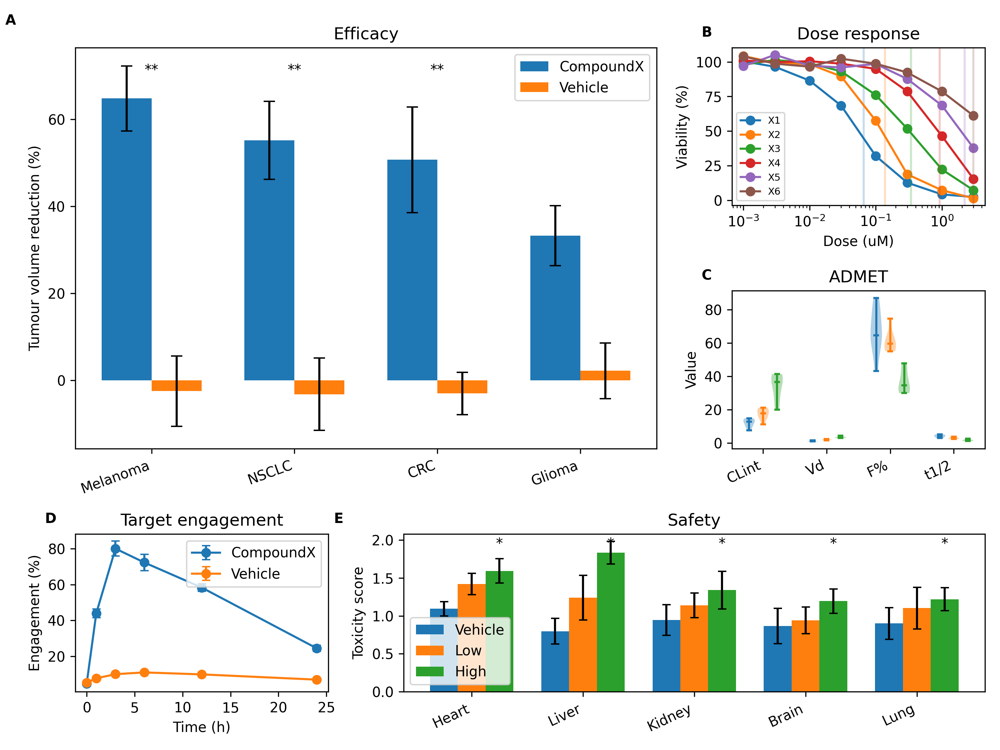
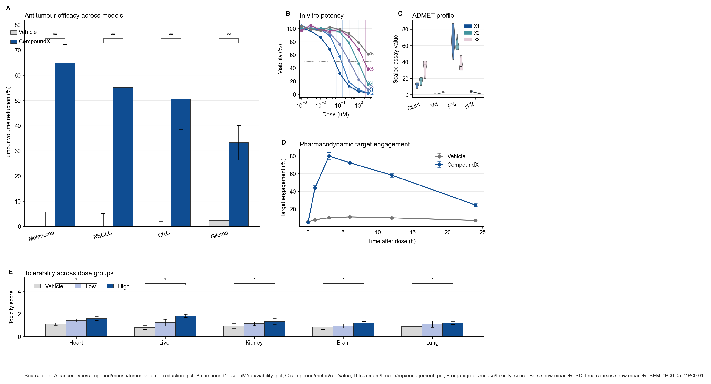
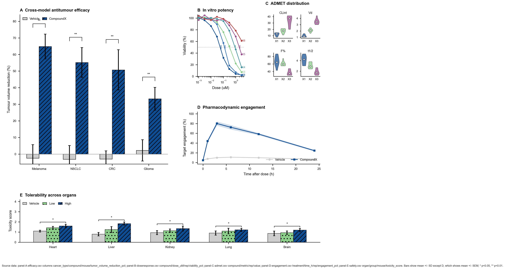

grid 3×3, A=gs[0:2,0:2], B,C right-stacked, D bottom-left, E bottom-right-2-cols. 254×191 mm.

grid 3×4, A=gs[0:2,0:2], B,C right-row-1, D=gs[1,2:4], E=gs[2,:] full-width-bottom. 310×167 mm.

grid 3×4, similar to nature-figure but panel C uses sub-gridspec 2×2 for ADMET small multiples. 345×184 mm.